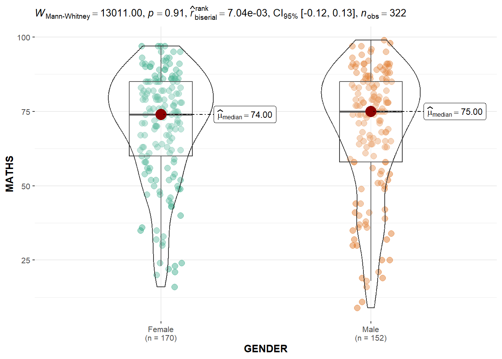
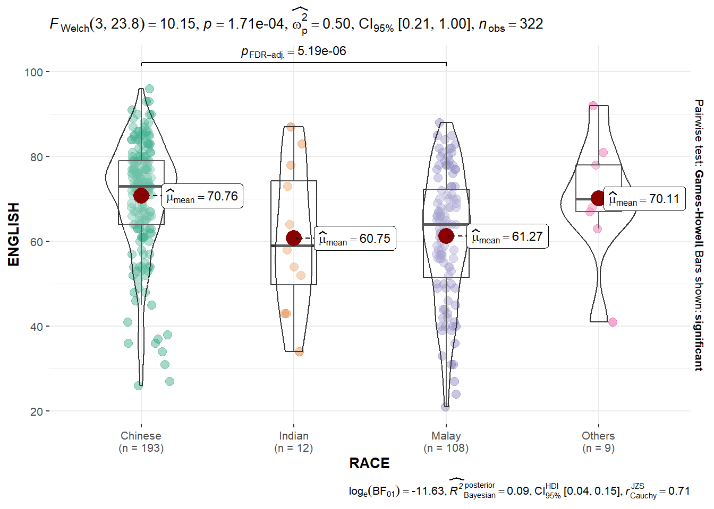
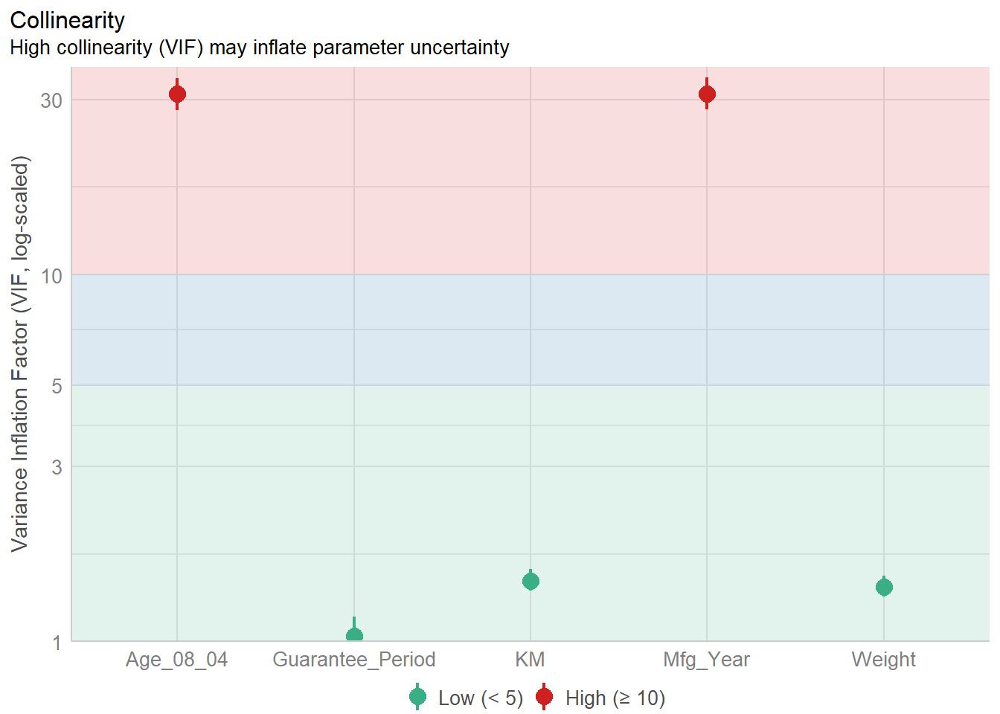
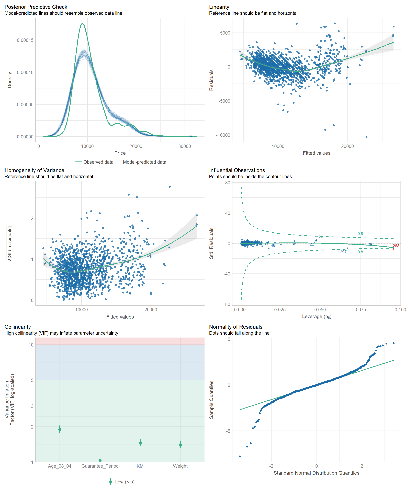

pacman::p_load(ggstatsplot, tidyverse)Hands-on Exercise 4: Fundamentals of Visual Analytics
1. Getting Started
Install and launching R packages.
The code chunk below uses p_load() of pacman package to check if packages are installed in the computer. If they are, then they will be launched into R. The R packages installed are:
- ggstatsplot is an extension of ggplot2 package for creating graphics with details from statistical tests included in the information-rich plots themselves.
Importing the data
exam_data <- read_csv("data/Exam_data.csv")2. Visual Statistical Analysis
2.1 One-sample test using gghistostats for
set.seed(1234)
gghistostats(
data = exam_data,
x = ENGLISH,
type = "bayes",
test.value = 60,
xlab = "English scores"
)
Default information: - statistical details - Bayes Factor - sample sizes - distribution summary
A Bayes factor is the ratio of the likelihood of one particular hypothesis to the likelihood of another. It can be interpreted as a measure of the strength of evidence in favor of one theory among two competing theories.
2.2 Two-sample mean test using ggbetweenstats
ggbetweenstats(
data = exam_data,
x = GENDER,
y = MATHS,
type = "np",
messages = FALSE
)
Default information: - statistical details - Bayes Factor - sample sizes - distribution summary
2.3 Oneway ANOVA Test using ggbetweenstats
ggbetweenstats(
data = exam_data,
x = RACE,
y = ENGLISH,
type = "p",
mean.ci = TRUE,
pairwise.comparisons = TRUE,
#"ns" for only non-significant, "s" for only significant, "all" for everything
pairwise.display = "s",
p.adjust.method = "fdr",
messages = FALSE
)
2.4 Significant Test of Correlation using ggscatterstats
ggscatterstats(
data = exam_data,
x = MATHS,
y = ENGLISH,
marginal = FALSE
)
2.5 Significant Test of Association (Dependence) using ggbarstats
#Binning Maths scores to 4-class variable
exam1 <- exam_data |>
mutate(MATHS_bins =
cut(MATHS,
breaks = c(0, 60, 75, 85, 100)))ggbarstats(
data = exam1,
x = MATHS_bins,
y = GENDER
)
3. Visualising Models
3.1 Preparation
pacman::p_load(readxl, performance, parameters, see)car_resale <- read_xls("data/ToyotaCorolla.xls",
"data")3.2 Multiple Regression Model using lm()
Calibrate a multiple linear regression model by using lm() of Base Stats of R.
model <- lm(Price ~ Age_08_04 + Mfg_Year + KM +
Weight + Guarantee_Period, data = car_resale)
model
Call:
lm(formula = Price ~ Age_08_04 + Mfg_Year + KM + Weight + Guarantee_Period,
data = car_resale)
Coefficients:
(Intercept) Age_08_04 Mfg_Year KM
-2.637e+06 -1.409e+01 1.315e+03 -2.323e-02
Weight Guarantee_Period
1.903e+01 2.770e+01 3.3 Checking for multicollinearity using check_collinearity()
check_collinearity(model)# Check for Multicollinearity
Low Correlation
Term VIF VIF 95% CI Increased SE Tolerance Tolerance 95% CI
Guarantee_Period 1.04 [1.01, 1.17] 1.02 0.97 [0.86, 0.99]
Age_08_04 31.07 [28.08, 34.38] 5.57 0.03 [0.03, 0.04]
Mfg_Year 31.16 [28.16, 34.48] 5.58 0.03 [0.03, 0.04]
High Correlation
Term VIF VIF 95% CI Increased SE Tolerance Tolerance 95% CI
KM 1.46 [1.37, 1.57] 1.21 0.68 [0.64, 0.73]
Weight 1.41 [1.32, 1.51] 1.19 0.71 [0.66, 0.76]#plot the collinearity
plot(check_collinearity(model))
Age_08_04 and Mfg_Year are highly correlated. Remove Mfg_Year
3.4 Checking for normality assumption using check_normality()
#Remove Mfg_Year from model
model1 <- lm(Price ~ Age_08_04 + KM +
Weight + Guarantee_Period, data = car_resale)check_n <- check_normality(model1)
plot(check_n)
The analytical histogram above is specially designed for normality assumption test. When the residual histogram (in cyan colour) is not closed to the theoretical histogram (i.e in green), then we will reject the Null hypothesis and infer that the model residual failed to conform to normality assumption.
3.5 Checking for homogeneity of variances using check_heteroscedasticity()
check_h <- check_heteroscedasticity(model1)
plot(check_h)
The analytical scatter plot is used to perform homogeneity of Variance assumption test. A constant variance distribution should be flat and horizontal and the data points should be scattered around the fit line. The chart above shows clear sign of heteroscedasticity.
3.6 Complete check using check_model()
check_model(model1)
3.7 Visualising Regression Parameters
Using plot() and parameters()
plot(parameters(model1))
Using ggcoefstats() of ggstatsplot package
ggcoefstats(model1,
output = "plot")